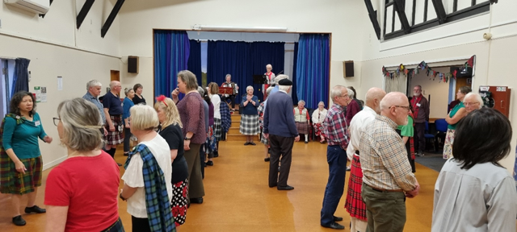

Aileen was presented with a bouquet
On Saturday, we had our annual potluck dinner, at my place. Attendance was a mite disappointing, with only 13 of us there, including John and myself, as both Robert and Brenda, and Colin called in sick. Compared with 30 people attending last year, this was a much more 'select' gathering, but still very sociable and enjoyable. Thanks to those who attended, and for bringing their lovely dishes.
We managed to dance just one dance on the deck - The Oriel Strathspey, that Catherine taught a few weeks ago. If you remember, that was one of the dances suggested by the RSCDS for the possible contribution to their "Dance Around the World" Facebook event. John took a video, viewing it from above, which he reduced to the stipulated 30 seconds (!), but I have not been able to post it on the RSCDS Facebook page (technology defeated me!). However, I was able to post a longer video, that I took, on the Tawa FB page. You can check it out here https://www.facebook.com/TawaSCD. We only did one dance, as the southerly was making itself felt, so everyone was keen to scuttle back inside for dessert. This included a surprise - a birthday cake for John, who is turning 80 in a few weeks' time - a bit early, but a number worth celebrating, I thought.

"Oriel Strathspey".
Last night (Monday 25 Nov) was the final night for the Johnsonville Club, and again, Tawa was well represented with 10 of our members there. And though there was an advanced group afternoon dancing session today (with Rod Downey), and there is another one next week (with Iain Boyd), I did not attend, as I have mentally 'switched off' from dancing for now - until Summer School.
Summer School
Good luck to all those who will be attending either the full or half the school. I am sure you will have a fabulous time. A reminder for those that are not attending the school, but who will be in Wellington over the period of 28 December to 4 January, that the evening functions are open for all to attend. Details of all the evening dances are here, including date, cost, MC, musicians, programme and cribs for each event.
As a reminder, I am repeating here the details I wrote in my email of 1 November:
- Saturday 28 December - Opening night, MC Rod Downey
- Sunday 29 December - Youth Night , MCs Isobel Harris Clark and Helen Oliver. This programme was devised and will be MC'd by some of our young dancers, and promises to be a very energetic night! Music by Wild Heather (Lynne, Mary McD and friends)
- Monday 30 December - Kiwiana Fancy Dress Night. MC Iain Matcham. This will be loads of fun. Start planning your Kiwiana costume now! The music will be provided by Aileen, Hilary and Jason.
- Tuesday 31 December - Hogmanay. Note the late start, 8:00 pm, because it goes on till late, 1:00 am! If you've never attended a Hogmanay dance, witnessed the Hogmanay ceremony, and danced or watched the 32-some Reel, now is your chance! The MCs are some of the Lower Hutt teachers.
- Wednesday 1 January - A rest day! There will be no evening event, but the RSCDS NZ Branch will have its AGM at 2:00pm.
- Thursday 2 January - The President's Ball. This will be quite a grand event, time to dress up in your best finery, and for the men, definitely a kilt (if you have one). The function starts with drinks and nibbles at 7:00 pm, during which the Branch President, Debbie Roxburgh, will try to meet as many of the people there as possible. Then before dancing starts, there will be a Grand March, which is a a sight to behold, and fun to take part in. This will also be "Tawa's night", as Catherine will be the MC. Also some of us will be helping on the door and in the kitchen.
- Friday 3 January - The Ceilidh. Not so much dancing (if any), more an evening for watching and enjoying the many items on show from some of our multi-talented school attendees.
- Saturday 4 January - Final Night. MC Elaine Laidlaw. The joyous conclusion of a great Summer School.
I do hope to see some of you at a few of these functions.
Finally ...
So here we are, apart from some possible Summer School reminders, this will probably be my last club email for 2024.
Wishing everyone a restful and relaxing holiday break, or an energetic and music-filled Summer School, and best wishes for a happy and healthy 2025!
Cheers
Desiree